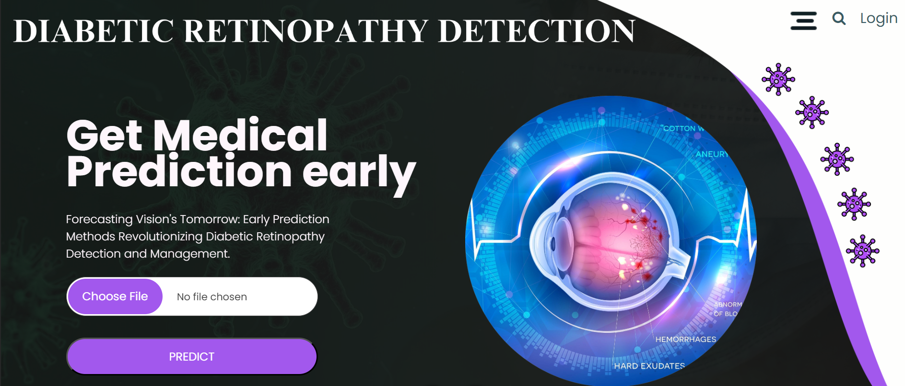
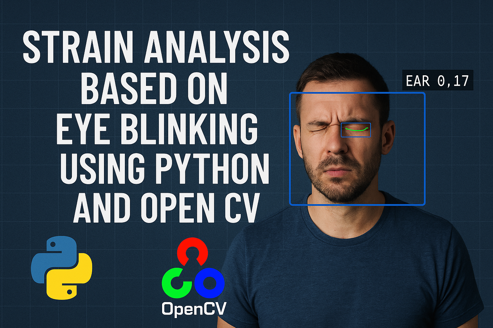
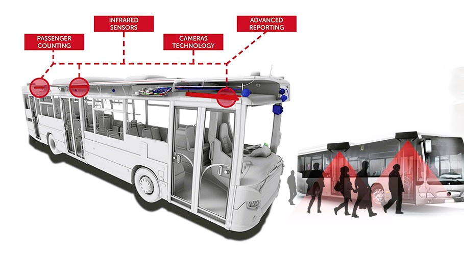

Hello, I'm
Rayapalli Sai Nithin
Artificial Intelligence and Data Science Graduate


Get To Know More
About Me
I’m Sai Nithin Rayapalli, a dedicated and enthusiastic graduate in Artificial Intelligence and Data Science, currently pursuing my M.Tech in Computer Science at NIT Srinagar. My academic journey has shaped me into a critical thinker with a strong foundation in machine learning, deep learning, and core programming skills across Python, Java, and C. I have a keen interest in Data Science and Machine Learning, and I’m constantly exploring new technologies to stay at the cutting edge of AI advancements. My internship experience has helped me develop practical knowledge in model development and data analysis, while also honing my skills in time management, problem-solving, and effective communication. As a motivated learner and a natural team player, I aim to contribute to innovative and impactful solutions that leverage the power of data to make a difference.

Certificate of Excellence
Bachelors of Technology Batch 2020-2024
Seshadri Rao Gudlavalleru Engineering College

TCS Code-Vita Season 11 Ranker
Tata Consultancy Services
2023-2024
GATE Qualifier
Graduate Aptitude Test in Engineering
2024
My
Education

Masters of Technology
Computer Science
2024-2026CGPA: 8.3

Bachelores of Technology
Artificial Intelligence and Data Science
2020-2024CGPA: 8.88
Intermediate Education
MPC
2018-2020CGPA: 9.73
Secondary Education
10th Class
2017-2018CGPA: 9.5
My
Skills

Python
Experienced
Java
IntermediateC
IntermediateHTML
IntermediateCSS
BasicSQL
IntermediateDBMS
IntermediateTechnical Skills

Time Management
Team Player
Eye for Detail
Effective Communication
Personality Skills
Browse My Recent
Projects
Diabetic Retinopathy Detection

This project focuses on detecting diabetic retinopathy (DR), a serious eye condition caused by diabetes, using deep learning models.
Retinal fundus images are analyzed with advanced convolutional neural networks models.
In which, EfficientNetB0 delivered the highest accuracy (95.39%). The project leverages transfer learning and data augmentation to enhance
model performance and efficiency, especially in limited data scenarios. A web application was also developed using Flask to allow users to upload retinal images
and receive predictions on DR severity, improving accessibility and aiding early diagnosis.
Technology Stack: Python, Deep Learning, HTML, CSS, PyTorch
Strain Analysis Based on Eye Blinking

Strain Analysis Based on Eye Blinking Using Python and OpenCV is a real-time fatigue monitoring system
that evaluates eye blinking patterns to detect signs of visual strain. The system uses a webcam to capture facial data,
employs Dlib's 64-landmark shape predictor to precisely locate eye regions, and computes the Eye Aspect Ratio (EAR) to identify blinks.
By analyzing the frequency and irregularity of blinks, the system triggers alerts via audio and popup notifications when strain is suspected.
Technology Stack: Python, OpenCV, Dlib (64-landmark shape predictor), VS-Code
Passengers Monitoring System

The Passengers Monitoring System is an IoT-based solution designed to count passengers entering
and exiting public transport vehicles, like buses. Using infrared sensors and an Arduino,
it tracks real-time occupancy and displays it on an OLED screen.
The system also controls lights based on passenger presence, aiming to improve transport efficiency,
reduce manual errors, and help both passengers and authorities manage seating better.
Technology Stack:Arduino IDE, IR Sensors,Arduino Uno
My
Publications
Medical Insurance Predictive Modelling: An Analysis of Machine Learning Methods
2024 IEEE International Conference on Interdisciplinary Approaches in Technology and Management for Social Innovation (IATMSI)
Predicting healthcare expenses accurately is crucial for a wide range of stakeholders and healthcare institutions. Machine learning (ML) may help enhance policy wording efficiency in the insurance industry, and ML algorithms are especially beneficial in healthcare for projecting high-cost, high-need patient bills. A computational intelligence technique is used to estimate healthcare insurance expenditures using machine learning algorithms. It is difficult to choose a single regression model for predicting health-care costs, thus we build an algorithm that uses multiple regression models and calculates the accuracy. The stochastic gradient boosting technique achieves an accuracy of 88.98%.
Get in Touch